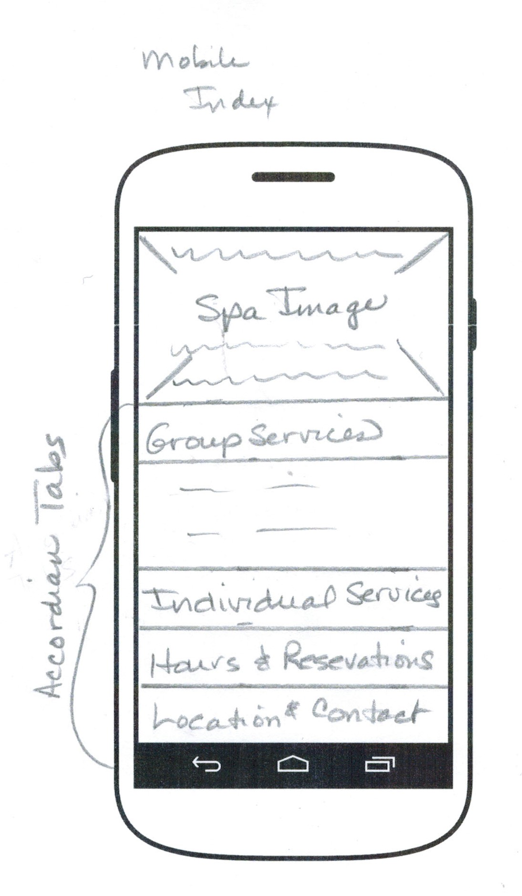

Responsive site is better than an adaptive site. Where adaptive is optimized for eery class and device - a responsive design is a universal design which flows accross displays. So, you don't have to write for each device - which would be very complicated and take a long time. A Responsive design writes to the reflow - it adjusts to the display in an universal way. You do this by using CSS media queries.
You desing up from the mobile size to the desktop size instead of designing down. I think of it as an unfolding piece of paper. The important information is on the visable area of the folded paper, but as you unfold it you get more information and it's set on unfolding in a priority of how information should be received. So, the least inquired information is at the edges of the paper you have to open the folded paper to see. The information you need most often and is most searched for is what is displayed first.
And it's important because people live with their phones or with devices that are smaller than desktops. So if you cater towards only desktop users then you are ignoring the population that may wish to utilize your services or wish to buy what you are selling. It would be very poor marketing to marginalize these devices and the individuals that use them.
From what I understand it a piece of software that can help you make your website more quickly but not necessarily better. It is good to save time - better for the customer. Also they are set frameworks based on CSS grid. So your focus is on the boxes that you line up to make a webpage.
Just getting started was my hiccup. I kept reading and looking online for what other people use and basically spent time looking up information. Found some templates and started playing with those. It was nice putting pencil to paper. I'm sure that next week I'll be wishing to change everything about my wireframes. But had to start somewhere.
Want to make it really simple and the text easy to read - KISS - Keep it simple stupid. Also use soothing colors without jarring contrasts. Text large enough for people with poorer eyesight to read.
Make sure all the images have alternate text in case user's device blocks the images or cannot display it. Easy accessible links that are easy to find to get to information that is most often requested.